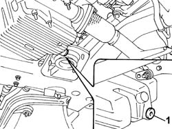
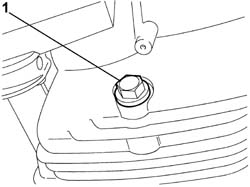

0010T12 ENGINE OIL AND FILTER - REPLACE
- Path
- Procedures > 00 MAINTENANCE > 0010 NEW UNITS AND MAINTENANCE > 0010T vehicle oil and fluids > 0010T12 ENGINE OIL AND FILTER - REPLACE
- Kind
- repair procedure (removal / refitting; the operation number is the code)
- Applies to
- all engines; all production periods
- Interactive page
- https://sloeber94.github.io/elrnDB-lThss/en/#/606282
Applies to: all engines; all production periods
- Position the vehicle on the lift.
- Remove the filler cap
- Release the dipstick.
- Raise the vehicle.
See in Op. 7055B54 PROTECTION/GUARD under engine - R.R.
- Position a suitable container under the vehicle by the drain plug.
Applies to: engines: 2.0 TB, 2.4 20V, 2.4 JTD 10V; all production periods
1. Undo the drain plug in the crankcase sump and leave the oil to drain into the container.

Applies to: engines: 3.0 V6, 3.2 V6; all production periods
1. Undo the drain plug in the crankcase sump and leave the oil to drain into the container.

Applies to: all engines; all production periods
- Proceed with removing the engine oil filter following the specific instructions for each engine type:
Applies to: engines: 2.0 TB, 2.4 20V; all production periods
- Refill the lubrication circuit with the recommended oil.
 | Description | Qty. | Component | Type | Classification |
|---|---|---|---|---|---|
. | SELENIA RACING | 5.50 Litri | ENGINE LUBRICATION SYSTEM | Oil | SAE10W60 |
- This fluid is also guaranteed for temperatures down to -20°.
Applies to: engines: 2.4 JTD 10V; all production periods
- Refill the lubrication circuit with the recommended oil.
| Description | Qty. | Component | Type | Classification |
|---|---|---|---|---|---|
. | SELENIA TURBODIESEL | 5.50 Litri | ENGINE LUBRICATION SYSTEM | Oil | SAE10W40-ACEA B3-API CD |
- The following fluid is recommended for temperatures down to - 15°.
| Description | Qty. | Component | Type | Classification |
|---|---|---|---|---|---|
. | SELENIA WR DIESEL | 5.50 Litri | ENGINE LUBRICATION SYSTEM | Oil | SAE 5W40-ACEA B4-API CF |
Applies to: engines: 2.4 JTD 20V; all production periods
| Description | Qty. | Component | Type | Classification |
|---|---|---|---|---|---|
. | SELENIA TURBODIESEL | 5 Litri | ENGINE LUBRICATION SYSTEM | Oil | SAE 10W40-ACEA B3-API CD |
- The following fluid is recommended for temperatures down to - 15°.
| Description | Qty. | Component | Type | Classification |
|---|---|---|---|---|---|
. | SELENIA WR DIESEL | 5 Litri | ENGINE LUBRICATION SYSTEM | Oil | SAE 5W40-ACEA B4-API CF |
- If the lubrication system is completely drained (engine, filter and oil heat exchanger), the amount of fluid to be introduced into the circuit is 6 litres.
Applies to: engines: 3.0 V6, 3.2 V6; all production periods
- Refill the lubrication circuit with the recommended oil.
| Description | Qty. | Component | Type | Classification |
|---|---|---|---|---|---|
. | SELENIA PERFORMER | 5.90 Litri | ENGINE LUBRICATION SYSTEM | Oil | SAE10W40 ACEA A3 API SL |
- The following fluid is recommended for temperatures down to -20°.
| Description | Qty. | Component | Type | Classification |
|---|---|---|---|---|---|
. | SELENIA 20K | 5.90 Litri | ENGINE LUBRICATION SYSTEM | Oil | SAE5W30 ACEA A1 API SL |
Applies to: all engines; all production periods
See in Op. 0010T11 ENGINE OIL - Check level and top up if necessary
- Check that the oil level is correct using the dipstick with reference to op
- Fit the filler cap.
- Start the engine and let it idle for about two minutes; switch off the engine and wait for a few minutes.
- Check that the oil level is correct once again.
See in Op. 7055B54 PROTECTION/GUARD under engine - R.R.
- Remove the vehicle from the lift.